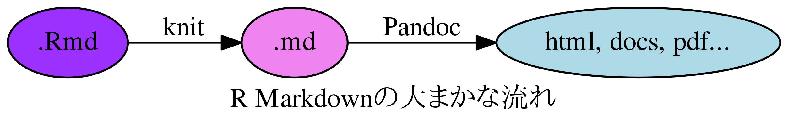
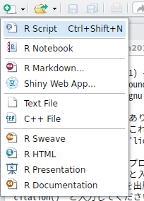
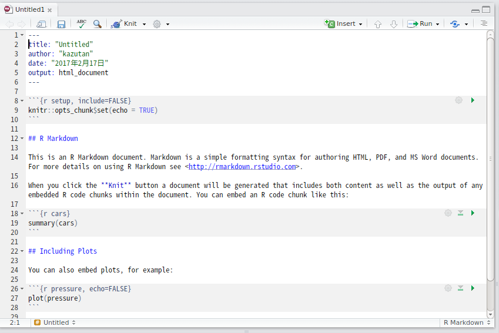
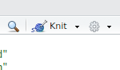
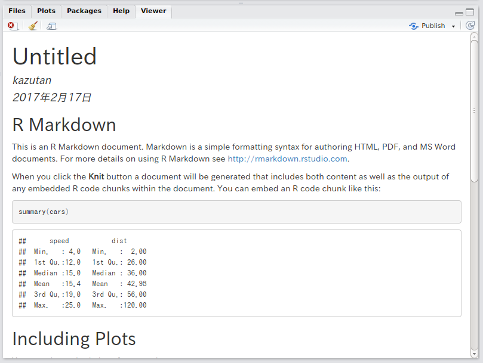
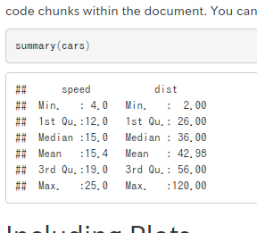
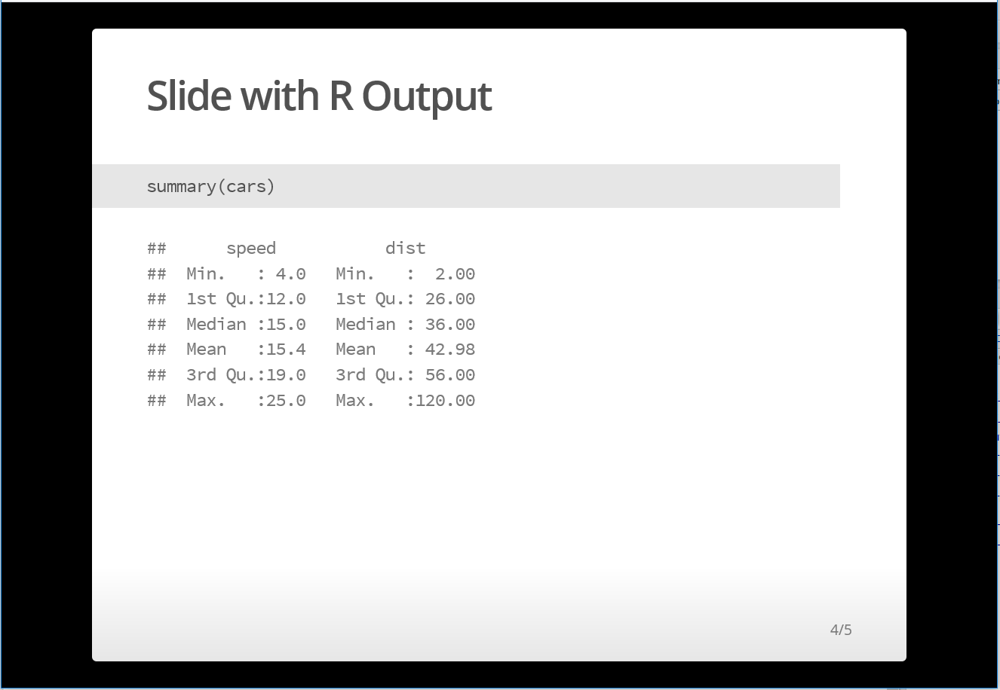
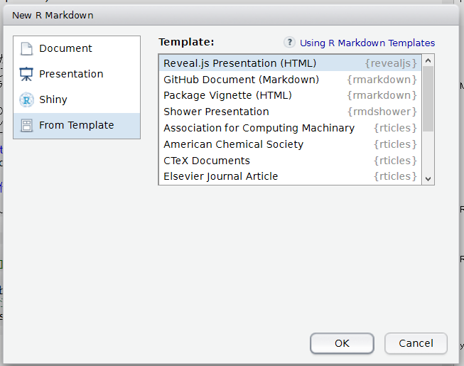
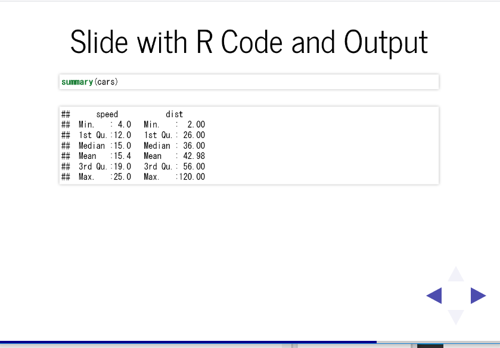
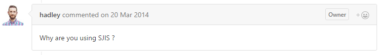

R Markdown入門
はじめに
今回の内容
- R Markdownとは
- 仕組みを簡単に紹介します
- Markdown記法
- 必要最低限の説明をします
- R Markdownでドキュメント生成
- 実際にファイルを使って説明します
- R Markdownでスライド生成
- 実際にファイルを使って作ってみます
留意事項
このドキュメントはR Markdownの初心者を想定しています。なので基本的な内容を中心に構成しています。なおRのコードは必要最低限しか出てきません。なおこれは過去にスライド形式で発表したRmdファイルをほぼそのままドキュメントとして出力しています。そのためほぼ箇条書きで書いています。
実行環境は,aboutを参照してください。
R Markdownとは
Rでドキュメント生成
- Rはデータ解析
- 実はRでドキュメントを生成することが可能
- R Markdownを利用
- その便利さ、その将来性に注目が
- 今日はR Markdownによるドキュメントやスライド生成をご紹介
Rでやるメリット
- 分析からレポート生成までが完結
- WordもExcelも(そしてぱわぽも)いらない
- コピペ汚染からの開放
- 再現性の確保
- 同一の内容をそのまま再現できる
- 再利用、配布が簡単
- コードを簡単に再利用可能
- テキストデータなので運用が簡単
- 作るのが簡単
- ドキュメント部分は基本Markdown
- and more!!
R Markdownの基本的な仕組み
- 以下の2ステップでドキュメントなどを生成します
- Rmdファイル内のRコードを評価
- Rコードの出力をMarkdownに起こす
- 出来上がったMarkdownファイルを変換
- Pandocというソフトウェアを利用
- RStudioに標準で組み込まれています

ワークフロー
- R Markdownファイル(hoge.Rmd)を準備
- 中身を記述
- レンダリング(Knit)して出力を確認
- 2と3を繰り返す
- 完成
- 正直なところ，まずはMarkdownが書けて，Rチャンク(後述)を作れればOKです
- 様々な機能や設定は大量にありますが，デフォルトでも十分使えます
- まずは早速使ってみましょう
はじめてのR Markdown
- Rmdファイルを作成
- RStudioを起動
- 画面左上のボタンからR Markdown…をクリック

- 初期設定
- Title: ドキュメントのタイトル
- Author: 著者名
- Output Format: ファイル形式

ファイルが作成され，自動で開きます:

- Knitする
- window上部のKnitボタンをクリック
- Rmdファイルのファイルを保存するダイアログボックスが表示
- 保存したら実行されます

レンダリングが終了すると，自動的に.htmlファイルが作成され，Viewerに表示されます:

ワークフローの確認
- R Markdownファイル(hoge.Rmd)を準備
- 中身を記述
- レンダリング(Knit)して出力を確認
- 2と3を繰り返す
- 完成
- というわけで，1と3の基本はこれでOKです
- 次に，中身の作り方を説明します
Markdown記法
Markdown(md)とは
- 文書を記述するための軽量マークアップ言語のひとつ
- ドキュメント構造の基本的なものを提供
- R Markdownはこれで文書を作ります
- mdには色々な“方言”が
- RmdはPandoc Markdownです
- RStudioにはクイックリファレンスが
- [Help] - [Markdown Quick Reference]
- これみとけばOK
見出し(h1-h4)
- 文書構造を明確にするためにも、きっちり割り振る
- レベル1は通常文書タイトル(章クラス)
- レベル2は通常節クラス
- 以下準じて下がっていく
- 極力見出しの前後は空行をいれとくといいです
# レベル1(h1)
## レベル2(h2)
### レベル3(h3)
#### レベル4(h4)段落(p)と強制改行(br)
「もうすこしだ！ この山を越えると、梅の林がある。――疾く参って梅林の木陰に憩い、思うさま梅の実みをとれ。――梅の実をたたき落して喰え」
聞くと、奄々と渇にくるしんでいた兵も、
「梅でもいい！」
「梅ばやしまで頑張れ」と、にわかに勇気づいた。
そして無意識のうちに、梅の酸っぱい味を想像し、口中に唾をわかせて、渇を忘れてしまっていた。
――梅酸渇を医す。- 上下に空行を挟むと、そこを段落ブロック(p)として認識
- 行末に半角スペース2つ以上いれると強制改行(br)
番号なし箇条書き(ul>li)
- 箇条書き1
- 箇条書き1-1
- 箇条書き2
* 箇条書き2-1
* 箇条書き2-2- 記号とスペースの後に内容を記述
- どちらでもOK
- 行頭の空白4つで1レベル下がる
番号あり箇条書き(ol>li)
1. 番号1
1. 番号1-1
2. 番号2
1. 番号2-1
2. 番号2-2- 番号とピリオドとスペースの後に内容を記述
- 行頭の空白4つで1レベル下がる
コードブロック(pre>code)
- 入力した内容がそのまま表示されます
- Rのコードは評価されません
```
(ここにコード記述)
```強調表示
- 左のとおりです
- 強調具合などはCSSなどに依存します
*斜体*、もひとつ_斜体_
**太字**、もひとつ__太字__リンク、画像
- http://blog.kz-md.net/
- [リンク文字](http://blog.kz-me.net/)

- 基本、相対パスや絶対パスの両方OK
- URLでもOK
その他
- 以下の内容もいけます
- コードブロック
- 引用
- 脚注
- Latex数式
- 表
- 水平線 etc…
- Pandoc Markdownなら大抵OKです
- その他，htmlタグ直打ちでもOKです
- ただし，出力フォーマットがhtmlのみ
R Markdownの書き方
Markdownとの違い
- MarkdownにRのコードを評価するブロック(Rチャンク)とドキュメント設定用のYAMLヘッダを組み込めるようにしたもの
- 拡張子は.Rmd
- Markdownの基礎があれば、Rチャンクを少し勉強すれば利用可能
- RStudioを使うと抜群に楽になる
- 専用の便利機能がたくさん
- すぐに内容を確認(Preview)できる
- 補完機能も充実
対応する出力形式
- いろんなものに対応しています(一部抜粋)
- htmlファイル
- 基本かつ最強。最もRmdを活かせるタイプ。
- pdfファイル
- tex環境が必要。いくつか地雷があるけど整えれば楽しい。
- docxファイル
- Officeをインストールしてなくても生成可能。
- odtファイル
- LibreOfficeなどで利用可能。
- mdファイル
- Githubやブログ記事向け。
- rtfファイル
- リッチテキスト形式。
- その他いろいろ
- htmlファイル
なにから手を付けるべき?
- まずはMarkdownに慣れる
- 慣れないうちはQuick Referenceをみましょう
- Rチャンクに慣れる
- いろんなコードを実行してKnitする
- 基本的なチャンクオプションをおぼえる
- YAMLヘッダに慣れる
- YAMLの書き方に慣れる
- 基本的なオプションをおぼえる
これでOK。
Rチャンク(chunk)の基本
Rチャンクとは
- Rのコードを記述したブロック
基本的な書き方は以下の通り
```{r} head(iris) ```ちなみに実行結果は以下の通り:
## # A tibble: 6 × 5
## Sepal.Length Sepal.Width Petal.Length Petal.Width Species
## * <dbl> <dbl> <dbl> <dbl> <fctr>
## 1 5.1 3.5 1.4 0.2 setosa
## 2 4.9 3.0 1.4 0.2 setosa
## 3 4.7 3.2 1.3 0.2 setosa
## 4 4.6 3.1 1.5 0.2 setosa
## 5 5.0 3.6 1.4 0.2 setosa
## 6 5.4 3.9 1.7 0.4 setosaキャプチャするとこんな感じ:


Rチャンクの基本
- Rチャンクはいくつでも設置可
- チャンクに名前をつけることも可能
- 結構詳細にオプションを設定可能
- Rオブジェクトを引き継ぐことも可能
- 通常と(ほぼ)同じようにRが使える
- パッケージ読み込みやファイルへのアクセス
- コードのみを実行可能
- コードのみを実行すると
Global Envirnmentに - Knitした場合，別のEnvironmentで実行される
- cacheしておくことも可能(今回は省略)
- コードのみを実行すると
Rチャンク オプション
- そのRチャンクでの設定を記述
- 設定項目はたくさんある
- そのあたりはリファレンスを参照
- 以下、絶対覚えるべきものだけ紹介
```{r chank-name, eval=TRUE}
head(iris)
```echo(コード部の表示・非表示)
- Rのチャンクコードを表示させるかどうか
echo=FALSEで非表示- あくまで表示に関することだけ
- コード評価をするかどうかは影響しない
```{r, echo=FALSE}
head(iris)
```eval(コード部の評価・非評価)
- Rチャンクのコードを評価するかしないか
eval=FALSEで非評価
```{r, eval=FALSE}
head(iris)
```include(レポートに組み込むか否か)
- Rチャンクをレポートに組み込むかどうか
include=FALSEでレポートから除外- でもコードは評価されます
- セットアップとか前処理とかパッケージ読み込みとかで重宝
```{r, include=FALSE}
library(zousan)
```yamlヘッダ
yamlヘッダの基本
- ドキュメントの全体的な設定など記述
- yaml記法で記述
- 左のスペース、重要
- 多分感覚をつかむまでは、見様見真似でやっていったほうがいいです
---
title: "Untitled"
author: "kazutan"
date: "2017年2月17日"
output: html_document
---標準で入る項目
Title:はドキュメントのタイトルauthor:は名前date:は日にちoutput:は出力形式に関して- ここで出力を指定・設定
- まずはここでいろいろ試しましょう
---
title: "Untitled"
author: "kazutan"
date: "2017年2月17日"
output: html_document
---練習: tocを有効にする
- Rmdファイルを新規作成
- 冒頭のyamlヘッダを編集
- output部分を右のように変更
- スペース2個分で段差をつける
- knitして出力されたファイルを確認
---
(省略)
output:
html_document:
toc: true
---練習: floating tocを有効にする
- 冒頭のyamlヘッダを編集
- output部分を右のように変更
- knitして出力されたファイルを確認
---
(省略)
output:
html_document:
toc: true
toc_float: true
---toc関連の設定項目
- toc: 見出しリスト作成。論理値。
- toc_depth: tocで拾ってくる見出しレベルの指定。数値。
- toc_float: tocをサイドメニューとして浮かせて表示させるか。論理値
- number_section: 見出しに通し番号を自動付与させるか。論理値。
---
(省略)
output:
html_document:
toc: true
toc_depth: 2
toc_float: true
number_section: true
---出力まわり
- keep_md: knitした時に途中で作成されるMarkdownをファイルとして残すかどうか。論理値。
- self_contained: 出力されるhtmlファイルに、画像やcssファイル、あるいはjsファイルなどを組み込んでしまい、htmlファイル単独でも表示できるようにするか。論理値。
---
(省略)
output:
html_document:
keep_md: true
self_contained: true
---- md_extentions: Pandoc Markdown拡張で追加and/or削除する要素を指定。
- 日本語見出しを使う場合、重要になります
- pandoc_args: Pandocに送る引数を指定。
- revealjsスライドを使う場合、重要になります
---
(省略)
output:
html_document:
md_extentions: NULL
pandoc_args: NULL
---その他の設定項目について
- html_documentで使える項目一覧は以下にまとめました:
- その他、以下の資料を参考にしてください:
R Markdownでスライド生成
なぜR Markdownでスライドを作るのか?
- 先述したドキュメント生成のメリットは共通
- スライドはアウトラインから起こすと作りやすい
- セクション、各スライドタイトル、コンテンツで構成
- シンプルなルールがそのまま適用できる
- レイアウトやテーマ要素をいちいち考えなくていい
- ごてごてしたレイアウト、本当に必要?
- テーマはスライドで共通してるから全体設定すればOK
スライド作成のバリエーション
- R Presentation
- RStudioに組み込まれたものでreveal.jsがベース
- 現状あまりおすすめしにくい
- ioslides
- rmarkdown標準で組み込み。結構きれい
- slidy
- rmarkdown標準で組み込み。いまいち
- beamer
- てふにしゃん御用達でpdfファイル形式
- {revealjs}パッケージ
- 多機能、デザイン豊富、カスタマイズしやすい
- このスライドもこれで作ってます
Rmdでスライドを作るには
以下のワークフローで進めます:
- スライド用のRmdファイルを新規で作成
- 内容を編集
- knitして確認
- 2と3を繰り返す
- 完成
ほぼドキュメントのときと違いませんが、どれで作るかによって1と2が変化してきます
ioslidesでスライド作成
- R Markdownファイルをダイアログボックスから作成
- Presentationに切り替える
- ioslides(HTML)を選択してOK

- 内容を編集してKnitを実行
- こういうスライドができあがります

ioslidesの使い方
- スライド区切り
- 見出しレベル2
##が各スライドのタイトル- レベル3以下はスライド内部の見出しとして処理
- 見出しなしでのスライド区切りは
---で
- 見出しレベル2
- セクション区切り
- 見出しレベル1
#の見出しがセクション区切り - スライド内コンテンツを入れても表示される
- 見出しレベル1
- いろんな機能がありますので、以下を参照してください
revealjsパッケージで作成
- パッケージをインストール
# CRANから
install.packages("revealjs")
# GitHubから
devtools::install_github("rstudio/revealjs")
# githubinstallパッケージでもok
githubinstall::githubinstall("revealjs")- R Markdownファイルをダイアログボックスから作成
- From Templateに切り替える
- revealjs Presentationを選択してOK

- 内部を編集してKnitを実行
- こういうスライドができあがります

revealjsの使い方
- 水平スライド遷移のみ(1Dスライド)
- 見出しレベル2
##でスライド区切り - レベル1
#は使用しないこと - タイトル無しスライド区切りは
---
- 見出しレベル2
- 水平･垂直スライド遷移(2Dスライド)
- 見出しレベル1がセクション区切り
- 見出しレベル2がスライド区切り
- 同一セクションが縦に連なり、セクションが移る際右へ
- セクション見出しのスライドはタイトルのみ
- 何か書くと垂直が機能しなくなります
- テーマ切り替え
- yamlヘッダを編集
- 使えるのは“default”, “simple”, “sky”, “beige”, “serif”, “solarized”, “blood”, “moon”, “night”, “black”, “league”, “white”
---
output:
revealjs::revealjs_presentation:
theme: sky
---- cssによる設定
- cssファイルを準備
- yamlヘッダを編集
- cssのセレクタについては、実際のhtmlを見てみるのが速い
- 楽したい方はこちらに近い情報あり
---
output:
revealjs::revealjs_presentation:
css: style.css
---- その他、いろんなことができます
- 詳しくは本家のドキュメントを参照してください
- https://github.com/rstudio/revealjs
- ほぼ内容かぶりますが、昔まとめたのがこちらです
- あるいは、Twitterなどで私に直接聞いてください
FAQ
スライドが戻る(進まない)
- 見出しがかぶるとこういう症状が発生します
- htmlの{#id}が自動生成されるときに重複するため
- これはPandocによる変換のときに付与されています
- この自動付与のルールについては、Pandoc Markdownの仕様を確認してください
- 日本語&半角英数字の見出しだと、半角英数字がかぶるだけで発生
- {rmarkdown}がPandocに送るデフォルト設定の仕様です
- 正直つらい
- 回避策
htmlドキュメントの場合、以下のおまじないを入れておいてください
--- output: html_document: md_extensions: -ascii_identifiers ---revealjsの場合は以下のようにしてください
--- output: revealjs::revealjs_presentation: pandoc_args: [ '--from', 'markdown+autolink_bare_uris+tex_math_single_backslash-implicit_figures' ] ---それでもうまくいかないときは、見出しを変更するか、以下のように`#idを手動で付与してください
# ほげほげ{#hogehoge}
スライドの縦が足りない
- まずは1枚に収まるように内容を再考しましょう
- **その内容は本当に必要ですか?
- どうしても必要なら…
- 適当なところで
---を差し込んで複数に分ける - slidyを使う
- 適当なところで
動的なコンテンツがおかしい
- htmlで出力してくるものが{revealjs}などのcssと干渉してくるため
以下のおまじないをsetupチャンクに仕込んでください
knit_print.htmlwidget <- function (widget, ..., options = NULL) { file <- basename(tempfile(fileext = ".html")) selfcontained <- if(is.null(rmarkdown::metadata$self_contained)) TRUE else rmarkdown::metadata$self_contained htmlwidgets::saveWidget(widget, file = file, selfcontained = selfcontained) content <- if (selfcontained) { on.exit(unlink(file), add = TRUE) list(srcdoc = paste(readLines(file), collapse = "\n")) } else { list(src = file) } x <- htmltools::tag("iframe", content) knitr::knit_print(x, options = options, ...) }
○○を追加したい!
- 基本、html上で実現可能なものならすべて対応できます
- Rmd(というかmd)はhtml直打ちに対応
- html_documentはjQueryとbootstrapを組み込んでる
- これらで実現できることならわりと簡単にできる
- 面倒だったら、直接私に聞いてください
インタラクティブな要素を組み込みたい
- RにはShinyがあります
- langtestはshinyです
- 詳しくはshinyマスターへご相談ください
PythonでR Markdownみたいなのないの?
- 私の知る限り、ここまでのものは現在ありません
- でもR Markdown上でPythonを実行できます
- 詳しくは以下を参照してください
- http://rmarkdown.rstudio.com/authoring_knitr_engines.html
デフォルトで入ってくる文字列うざい
- Rmdのテンプレートを自作する方法が
- 詳しくは本家ドキュメントを
- ただし、Pandocの知識が必要 = 面倒だったら、
zousan::new_rmd_ja()を - 自分用に作りました
- ただし、急に仕様変更使用することがあるので注意
チャンクを入れるのがめんどくさい
- チャンクを入れるボタンがあります
- キーボードショートカットを活用
- Ctrl/Cmd + Alt + I
- Knitにもキーボードショートカットあります
- Ctrl/Cmd + Shift + K
- チャンク内コードを実行するショートカットも
- Ctrl/Cmd + Shift + Enter
Windowsだと文字化けしたりする

次のステップに進むには?
まずはhtml_documentになれる
- これが一番の基本です
- 公式ドキュメントを一度見てください
- http://rmarkdown.rstudio.com/html_document_format.html
- チャンクオプションやyamlについてはよく使うのをおさえればOK
- わからなくなったら、RStudioのヘルプメニューへ
- R Markdown CheatSheatが便利です
- R Markdown Reference Guideもいい感じです
- わからなくなったら、RStudioのヘルプメニューへ
Pandocについて調べる
- R MarkdownはPandocを使ってmdを変換
- よくも悪くもPandocの仕様が大きく影響
- 文量が多いですが、以下を読むとかなり理解が進みます
- http://sky-y.github.io/site-pandoc-jp/users-guide/
- 実際、私はよくここでトラブルの解決策を探してます
CSSとJavascriptを勉強する
- htmlドキュメントはcssで書式設定
- cssが使えるようになれば自由自在
- Bootstrapが標準で組み込まれている
- あわせてこちらもチェックするとより便利に
- jsが使えると幅が広がる
- 動的なものも作れるように
- jQueryが標準で組み込まれている
- あわせてこちらもチェックするとよりすごいことが
いろんな出力フォーマットを試す
- docxドキュメントやpdf(tex)にも対応
- Webサイト構築も
- Blogも作れる
- 電子書籍も作れる
Enjoy!